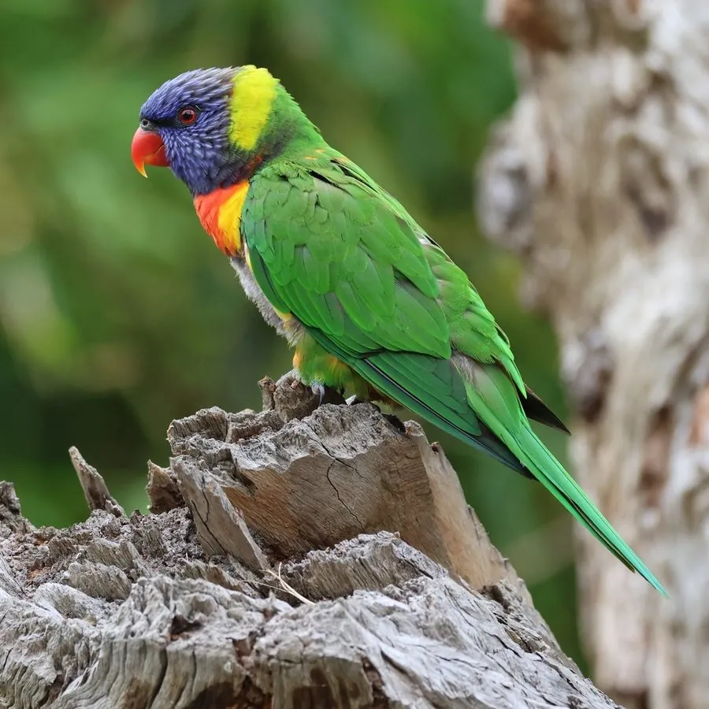

鸟类 · 动物界
彩虹吸蜜鹦鹉 Trichoglossus moluccanus

羽色如彩虹般绚丽的澳洲鹦鹉，用刷子状的舌头吸食花蜜，常成群在树冠层喧闹觅食，是受欢迎的宠物鸟。
- 分类
- 门脊索动物门纲鸟纲目鹦形目科鹦鹉科属吸蜜鹦鹉属
- 栖息环境
- 雨林、桉树林、城市公园与花园，营巢于高大乔木的树洞
- 地理分布
- 澳大利亚东部沿海、塔斯马尼亚及印度尼西亚部分岛屿，中国无野生分布
- 保护级别
- IUCN 无危（LC）；澳大利亚特有种，中国无野生分布
物种志
彩虹吸蜜鹦鹉体长 25–30 cm，体重约 75–157 g。它的羽色极为鲜艳：头部和颈部为深蓝色，胸腹部红橙相间，翅膀和背部绿色，尾羽绿色，喙橙红色，眼睛周围有深色裸皮。雌雄羽色相似，但雄鸟体型略大、羽色更亮。
彩虹吸蜜鹦鹉分布于澳大利亚东部沿海、塔斯马尼亚和印度尼西亚部分岛屿，栖息在雨林、桉树林、城市公园和花园。它们以花蜜、花粉和果实为主食，舌头末端长有刷子状的乳突，能高效地舔食花蜜，也吃少量昆虫。繁殖期在树洞中产卵，每窝 2 枚，孵化约 25 天。彩虹吸蜜鹦鹉适应力强，在城市中数量很多，常成群在树冠层喧闹觅食，是澳大利亚常见的鹦鹉之一，目前被列为无危物种。
形态与习性
- 食性花蜜、花粉、果实，也吃少量昆虫
- 体长25–30 cm
- 体重约 75–157 g
- 繁殖每窝 2 枚卵，孵化约 25 天
- 寿命圈养可活 20 年以上
- 舌形舌尖有刷子状乳突，专门舔食花蜜
- 习性常成群在开花的树冠上喧闹觅食
趣味知识
- 彩虹吸蜜鹦鹉的舌头末端长有刷子状的乳突，专门用来舔食花蜜。
- 它的羽色像彩虹一样绚丽，头部蓝色、胸腹橙红、翅膀绿色。
- 它们常成群在开花的树上喧闹觅食，是澳洲城市常见的鹦鹉。
- 彩虹吸蜜鹦鹉吃花蜜和花粉，也吃果实和少量昆虫。